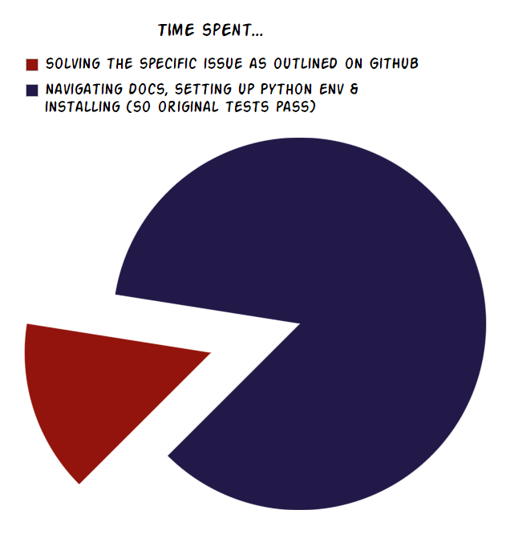

Hacktober(fest) = October as a month-long drive for open-source software contribution
A ❝do it in your own time❞ hackathon of sorts
In figures:
2018 → fifth year
make 5+ PRs on GitHub (rules apply)
completed by > 46,000 people...
...from ~140 countries
eligible PRs to > 100,000 GitHub repos
Elaborate:
* 'much like other positive-influence or charity based month drives,
think Go Sober October or Movember, etc'
* nothing to do with 'Oktoberfest', though beer may optionaly be consumed while coding
Freebies up for grabs!
Image courtesy of Gary dos Santos (via tweet @_GarySantos)
Elaborate:
* If willing to allow Digital... to access your GitHub account...
* ... e.g. had to sign agreement with Facebook, a company I detest.
* I completed, so was one of those 46,000. Full disclosure: only got
to 5 in October itself due to work PRs!
* most common listing under Hacktober & Python language was
'our documentation needs updating / polishing / writing'.
* my favourite listed issue was 'our project needs a GUI... build us a
GUI'
* Sadly no freebies to show off as they ship from the USA & have not
arrived...
What is this talk about?
elaborate on my Hacktober(fest) experience
→ first-time contributing to some projects
covering general lessons learnt from
diving into unfamiliar Python software
potentially-useful tips & tricks to pass on
will not detail specific contributions
Elaborate:
* not so much a retrospective as a ...
General observations...
#1: Python as a swiss-army knife
inspiring project diversity in Python Hacktober list
...perhaps
expect for a general language, but more so (?) for Python, which
is highly versatile:
general-purpose & multi-paradigm
extensive & well-supported ecosystem to utilise (sample via PyPI)
good (enough) for a lot of applications.
segregate the issue from the project:
don’t be put off by the overall project scope
e.g. don’t need to be a qualified glaciologist to improve plot
colormaps!
Elaborate:
* GENERALLY well-supported ecosystem [libraries, frameworks, tools]
* paradigm [OO, structured, functional ...]
* [and your Python abilities, 'at hand'] [obviously has its weaknesses,]
* [sample via ‘browse projects’ in PyPI]
* wide range
* [issue to be solved]
* glaciology expert
* => investment in Python ‘as a tool’ is worthwhile
* preaching to the choir, but point is invest in your Python abilities
will pay off dividends.
#2: the Python community is diverse
interacted with only a tiny sample, however they:
were all kind & constructive
hailed from all over globe (none UK-based!)
had expertise in wide-ranging areas.
Have audience in mind when writing code comments & docs:
English skills vary; keep language simple
consider your assumptions! Don't assume background
knowledge or environment (etc.)
don't use e.g. simply or self-explanatory
Elaborate:
* PYTHONISTAS, i.e. friendly
* Given first point => second.
* 'so try to have...' [so they aren't excluded]
[English as first language]
* [America, Austria, Russia!]
* will be frustrating to them & embarrasing to you when there are bugs
or typos breaking things.
* what's obvious to one person may not be to another
#3: Python projects > Python (& other) scripts
There's more to a project than a collection of Python plus
some config / admin / other language scripts. Consider:
packaging & dependencies
code style e.g. PEP 8 or stricter
code structure & higher-level 'style'
testing: methods, rigour & strictness on coverage
documentation
contribution guidelines
vision & ethos
Code with context!
Elaborate:
* [consistent, suitable in context]
* ...
More specific lessons...
Spoiler towards lesson #1:

Emphasise:
* ...not because I am a whizz at development
Overview by webcomic:
From xkcd (1987: 'Python Environment')
TODO:
* Apologies if this has already been shown at the Guild
#1: Environment set-up can be tricky
There are a lot of options for packaging & set-up of projects
Projects typically have a lot of (often specific-version)
dependencies that need to be managed.
specific (& if desired virtual) envs commonly set-up
via pip, conda &/or virtualenv
advise to follow docs install instructions to the word, but
these would often not work due to e.g. bugs or typos.
Elaborate:
* whole environment setup, packaging, testing framework & coverage &
strictness in use of, & documentation approach.
#2: Python 3 has some great features!
From the perspective of a version 2 developer, Python 3
(varying 3.X) was great to work with. Would like to
highlight two features...
Function annotations: specifications, not assertions
Type annotations:
def caps(word: str) -> str:
Custom package annotations e.g. units:
def energy(mass: u.kg):
Chained exceptions: no concealed traceback!
Elaborate:
* unfamiliar, but.
* as noted by a current Python 2 dev.
* e.g. type hints/annotations.
In summary...
Making contributions to unfamiliar projects...
is not just an October pursuit
is a great way to enhance & test Python skills
...but initial investment needed to set-up &
gain familiarity with each project (& see ✤).